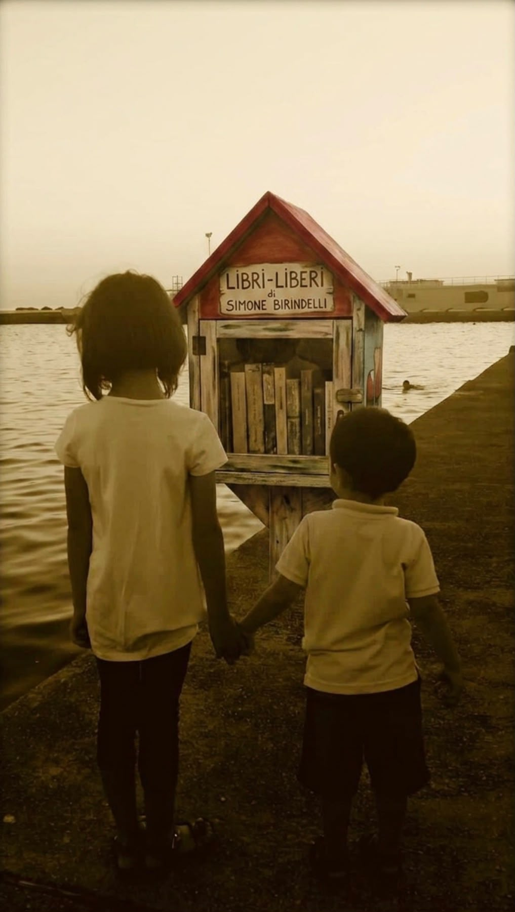

Piccole casette, grandi incontri.
Rifugio Libero nasce per rimettere in circolo libri, giochi educativi e occasioni di socialità. Un gesto semplice: prendi qualcosa, lascia qualcosa, condividi cultura e fai crescere la comunità.
Prendi
Scegli un libro dalla casetta e portalo con te. È gratuito, semplice, libero.
Condividi
Leggi, racconta, passa parola. La cultura diventa relazione, presenza e comunità.
Lascia
Riporta un libro leggibile e utilizzabile. In futuro anche puzzle, giochi educativi e socializzanti.
Trova una casetta vicino a te
Abbiamo preparato una mappa semplice con le casette già realizzate a Pisa e provincia. Ogni punto ti porta alle indicazioni stradali.
Apri la mappaEntra nel gruppo WhatsApp
Per aggiornamenti, nuove installazioni, raccolte libri e comunicazioni veloci possiamo inserire un invito al gruppo WhatsApp ufficiale.
Link gruppo in arrivoIl progetto cresce con chi decide di esserci.
Cittadini, scuole, negozi, aziende, comuni e associazioni possono sostenere Rifugio Libero: donando libri, ospitando una casetta, finanziandone una o diventando partner.
